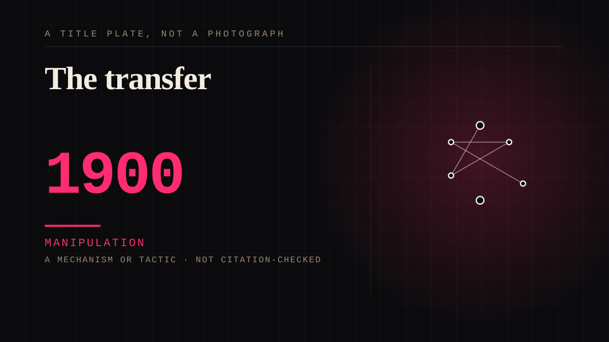

A mechanism or tactic · 1900 · Sport
The transfer
A player who has been attached to for years leaves, and the grievance is felt as betrayal by the entire locality.

The standard parasocial grievance story, and the one nobody frames as parasocial. The word for the feeling is betrayal, which is a relationship word, applied to a person who never signed anything.
Manipulation. One-sided attachment engineered for somebody else's benefit. Paid intimacy, parasocial persuasion, sasaeng, grief extraction, the streak. The lane that pays the bills and the lane that causes the most harm, frequently at the same time.
Where it sits
1900 1900-1949 · 1900 1949
Provenance · 4 source record(s)
- unverifiedThe mechanism, and it runs opposite to the usual account. Measured with a fan identification scale: fans identify MORE strongly with their favourite team than with their favourite individual player, and connection to a player is weaker if he never played for that team. Identification therefore transfers between team and player and remains 'long-lasting, even after the combination of both actors has been dissolved' - compared in the paper to research on supporters of relocated clubs. So the grievance lands on the departing individual because the durable attachment is to the club. Publisher returns 403; Crossref-confirmed.Merten, S., Reuland, N., Winand, M., & Marlier, M. (2020). Fan identification in football: professional football players and clubs competing for fan loyalty. Sport, Business and Management: An International Journal, 14(2), 169-187. ↗
- unverifiedInterview study in which players and fans treat a transfer as simultaneously an investment, a step in a career and 'a pledge to supporters' - players describing real obligations and expectations of supporters, and supporters describing attachment to players. The pledge is understood as binding by both sides and documented in no contract, which is what makes the word 'betrayal' available. Concludes that the market may be described as an emotional economy in which money is a means rather than a goal. Publisher returns 403.Herd, K. (2023). Transfer patterns in the Swedish football clubs - a gift economy of loyalties and emotions. Soccer & Society, 25(3), 257-271. ↗
- retrievableThe other side of the same bond: supporters' exits, analysed through Hirschman's exit-voice-loyalty framework. Finds German soccer fans inclined to voice rather than exit, but with demonstrable limits - some supporting a non-league club instead - and quotes the finding that consumption of professional soccer 'cannot be ceased altogether'. Notes the commercialisation critique that players are transferred 'like assets' without regard to the local fan community, producing alienation between players and fans. Open access.Kaden, M., Brandt, C., Bauers, S. B., Bunar, J., & Hovemann, G. (2023). "I don't watch that anymore": an analysis of online comments by German soccer fans on their relationship to their favored clubs. Frontiers in Psychology, 14. ↗
- retrievableMoves past tiered fan typologies to argue that devotion is best explained through social integration and a religious frame - religiosity and sacred consumption accounting for committed supporters of a single club, who see themselves as members of it and are unlikely to transfer allegiance. Case study of a Scottish club and its supporters. Author accepted manuscript in the University of Stirling repository.Fillis, I., & Mackay, C. (2014). Moving beyond fan typologies: the impact of social integration on team loyalty in football. Journal of Marketing Management, 30(3-4), 334-363. ↗
Not yet stood behind. The entry is real. A person has not read the citation and confirmed it, so treat the date as approximate until they do.
Connected · 2 out, 2 in
It sits in
The full timeline → · The database → · See it in the atlas →